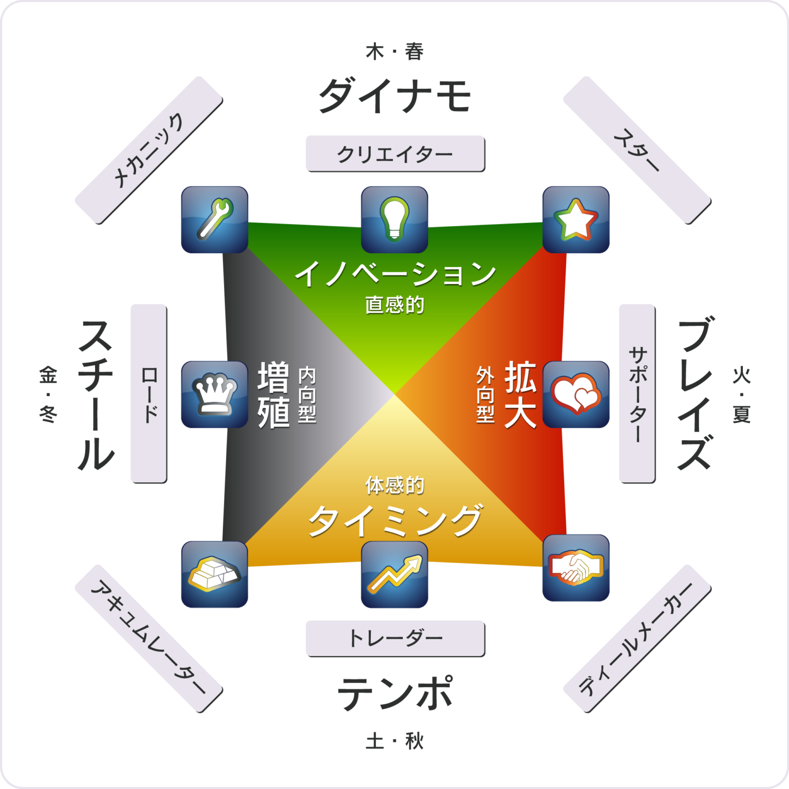
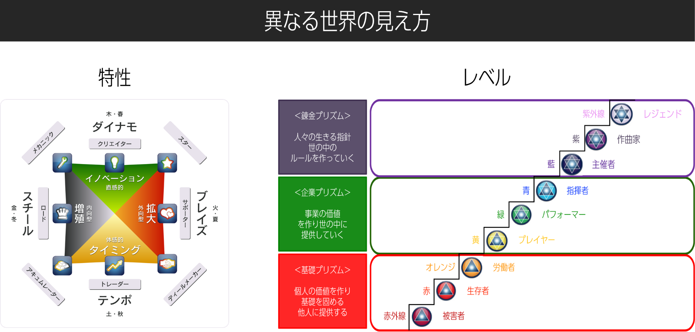

ウェルスダイナミクスとは、ロジャー・ハミルトンによって開発された「才能を成果につなげるためのフレームワーク」です。
単なる性格診断ではなく、どこで価値を発揮するのか、どの役割で機能するのかを整理するための考え方です。
こんな方に
- 自分の強みを活かした働き方を知りたい
- 今の方向性が合っているか確認したい
- ビジネスやキャリアを加速させたい
- 社員の強みを活かした組織づくりをしたい
- チームがうまく機能していないと感じている
なぜこの理論が必要か
多くの人は、努力が足りないから成果が出ないのではなく、自分に合わないやり方を続けていることで、必要以上に苦労しています。
ウェルスダイナミクスは、才能の優劣を見るものではありません。自分が自然に成果を出しやすい場所を知り、そこに力を集中させるための考え方です。

4つの特性（ダイナミクス）
ダイナモ（創る）
新しいアイデアを生み出す役割
ブレイズ（つなぐ）
人と関わりながら広げていく役割
テンポ（支える）
現場で安定して実行していく役割
スチール（整える）
仕組みを作り効率化していく役割
流れ：ダイナモ（創造）→ ブレイズ（拡散）→ テンポ（安定）→ スチール（構造化）
スペクトルという考え方
タイプ（方向）とスペクトル（現在地）
「今どの段階（レベル）にいるのか」という視点を重視しています。同じ特性でも段階によって取るべき行動は変わります。
多くの人がタイプの理解で終わってしまい、実践には至りません。タイプだけでなく「今どの位置にいるか」を知ることが重要です。
特性は「方向」、スペクトルは「現在地」を示します。この2つを組み合わせることで、やるべきことが明確になります。

サービス内容と料金
1. プロファイル・スペクトルセッション
- プロファイルテスト
- スペクトルテスト
- 強みと現在地の整理
- ズレているポイントの確認
- 今やるべき行動の整理
2. 収益構造設計セッション（受講者限定）
ウェルスダイナミクスセッション受講後、より具体的に進めたい方向け。
内容：強みを活かした働き方 / 収入の柱の整理 / 紹介導線 / 仕組み化 / レバレッジ設計
※必要と感じた方のみご案内
3. ウェルス集中講座（1DAY）
ウェルスダイナミクスを理解だけで終わらせず、実践レベルまで落とし込みたい方向け。
講師プロフィール
SATORU KOBAYASHI
18歳でトラック運転手として社会に出る。
その後、三菱商事グループで営業、営業所長、本社営業企画、新規事業開発責任者を経験し22年間勤務。
40歳で独立。
現在はウェルスダイナミクスをはじめ、人が豊かになるための仕組みづくりに取り組んでいる。
受講者の声
セッション受講者
「頑張っているのに結果が出ない状態が続いていました。セッションを受けて、自分のタイプと今のレベルが明確になり、『なぜうまくいかなかったのか』が腑に落ちました。今はやるべきことがはっきりし、迷いなく動けるようになっています。」
会社員
「いろいろ学んできましたが、結局どう動けばいいのか分からず止まっていました。セッションでズレているポイントが明確になり、自分に合った進め方が分かりました。もっと早く受けておけばよかったと思っています。」
経営者
「正直、何をやっても噛み合わない感覚がありました。セッションを受けて、原因が自分のやり方のズレにあると分かり、すごく納得できました。」
個人事業
集中講座受講者
「ウェルスダイナミクスは知っていましたが、実際にどう使えばいいのか分かっていませんでした。講座を受けて、考え方だけでなく具体的な動き方まで整理でき、実践できる状態になりました。」
個人事業
「自己理解はしているつもりでしたが、うまく活かせていませんでした。講座を通して、自分の強みの使い方とタイミングが分かり、自然と結果につながる感覚が出てきました。」
経営者
「これまでウェルスダイナミクスは何人かの方から学んできましたが、正直あまり現実は変わりませんでした。今回、小林さんの講座を受けて、初めて『どう使えばいいのか』が腑に落ちました。同じ内容のはずなのに、ここまで理解と行動につながったのは初めてです。」
経営者（1DAY講座）
よくある質問
Q. テストだけ受けることはできますか？
テストのみの提供は行っていません。対話まで含めて整理することを前提としています。
Q. どのくらい準備が必要ですか？
特別な準備は不要です。現在の状況をそのままお話しください。
Q. 経営者でなくても受けられますか？
可能です。ただし本気で整理したい方に限らせていただいています。
Q. どのような方には向いていませんか？
答えだけを求めている方、短期的な成功ノウハウを求めている方には向いていません。